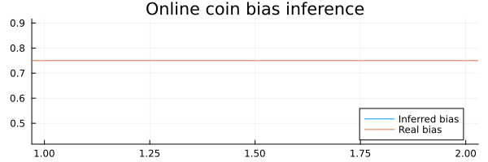
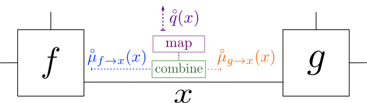
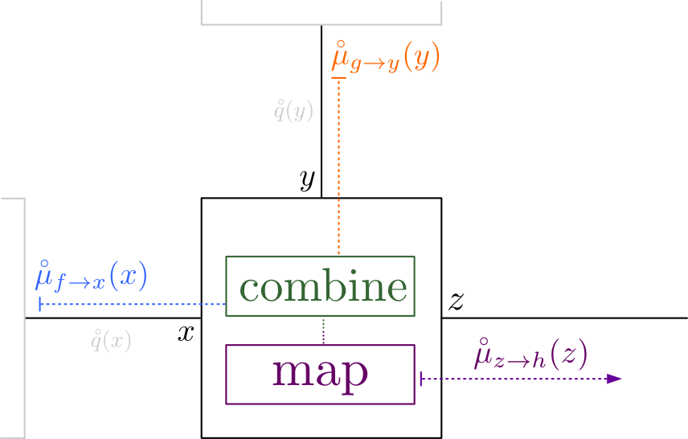

This example has been auto-generated from the examples/ folder at GitHub repository.
Advanced Tutorial
# Activate local environment, see `Project.toml`
import Pkg; Pkg.activate(".."); Pkg.instantiate();using RxInfer, PlotsThis notebook covers the fundamentals and advanced usage of the RxInfer.jl package.
This tutorial is also available in the documentation.
General model specification syntax
We use the @model macro from the GraphPPL.jl package to create a probabilistic model $p(s, y)$ and we also specify extra constraints on the variational family of distributions $\mathcal{Q}$, used for approximating intractable posterior distributions. Below there is a simple example of the general syntax for model specification. In this tutorial we do not cover all possible ways to create models or advanced features of GraphPPL.jl. Instead we refer the interested reader to the documentation for a more rigorous explanation and illustrative examples.
# the `@model` macro accepts a regular Julia function
@model function test_model1(s_mean, s_precision, y)
# the `tilde` operator creates a functional dependency
# between variables in our model and can be read as
# `sampled from` or `is modeled by`
s ~ Normal(mean = s_mean, precision = s_precision)
y ~ Normal(mean = s, precision = 1.0)
# It is possible to return something from the model specification (including variables and nodes)
return "Hello world"
endThe @model macro creates a function with the same name and with the same set of input arguments as the original function (test_model1(s_mean, s_precision, y) in this example). The arguments are however converted to the keyword arguments. The @model macro does not support positional arguments.
It is also possible to use control flow statements such as if or for blocks in the model specification function. In general, any valid snippet of Julia code can be used inside the @model block. As an example consider the following (valid!) model:
@model function test_model2(y)
if length(y) <= 1
error("The `length` of `y` argument must be greater than one.")
end
s[1] ~ Normal(mean = 0.0, precision = 0.1)
y[1] ~ Normal(mean = s[1], precision = 1.0)
for i in eachindex(y)
s[i] ~ Normal(mean = s[i - 1], precision = 1.0)
y[i] ~ Normal(mean = s[i], precision = 1.0)
end
endIt is also possible to use complex expressions inside the functional dependency expressions
y ~ Normal(mean = 2.0 * (s + 1.0), precision = 1.0)The ~ operator automatically creates a random variable if none was created before with the same name and throws an error if this name already exists
# `~` creates random variables automatically
s ~ Normal(mean = 0.0, precision1.0)Probabilistic inference in RxInfer.jl
RxInfer.jl uses the Rocket.jl package API for inference routines. Rocket.jl is a reactive programming extension for Julia that is higly inspired by RxJS and similar libraries from the Rx ecosystem. It consists of observables, actors, subscriptions and operators. For more information and rigorous examples see Rocket.jl github page.
Observables
Observables are lazy push-based collections and they deliver their values over time.
# Timer that emits a new value every second and has an initial one second delay
observable = timer(300, 300)TimerObservable(300, 300)A subscription allows us to subscribe on future values of some observable, and actors specify what to do with these new values:
actor = (value) -> println(value)
subscription1 = subscribe!(observable, actor)TimerSubscription()# We always need to unsubscribe from some observables
unsubscribe!(subscription1)# We can modify our observables
modified = observable |> filter(d -> rem(d, 2) === 1) |> map(Int, d -> d ^ 2)ProxyObservable(Int64, MapProxy(Int64))subscription2 = subscribe!(modified, (value) -> println(value))TimerSubscription()unsubscribe!(subscription2)Coin Toss Model
@model function coin_toss_model(y)
# We endow θ parameter of our model with some prior
θ ~ Beta(2.0, 7.0)
# We assume that the outcome of each coin flip
# is modeled by a Bernoulli distribution
y .~ Bernoulli(θ)
endWe can call the infer function to run inference in such model:
p = 0.75 # Bias of a coin
dataset = float.(rand(Bernoulli(p), 500));
result = infer(
model = coin_toss_model(),
data = (y = dataset, )
)
println("Inferred bias is ", mean(result.posteriors[:θ]), " with standard deviation is ", std(result.posteriors[:θ]))Inferred bias is 0.756385068762279 with standard deviation is 0.01900808375
5868727We can see that the inferred bias is quite close to the actual value we used in the dataset generation with a low standard deviation.
Reactive Online Inference
RxInfer.jl naturally supports reactive streams of data and it is possible to run reactive inference with some external datasource.
@model function online_coin_toss_model(θ_a, θ_b, y)
θ ~ Beta(θ_a, θ_b)
y ~ Bernoulli(θ)
endautoupdates = @autoupdates begin
θ_a, θ_b = params(q(θ))
end@autoupdates begin
(θ_a, θ_b) = params(q(θ))
endinit = @initialization begin
q(θ) = vague(Beta)
endInitial state:
q(θ) = Beta{Float64}(α=1.0, β=1.0)rxresult = infer(
model = online_coin_toss_model(),
data = (y = dataset, ),
autoupdates = autoupdates,
historyvars = (θ = KeepLast(), ),
keephistory = length(dataset),
initialization = init,
autostart = true
);animation = @animate for i in 1:length(dataset)
plot(mean.(rxresult.history[:θ][1:i]), ribbon = std.(rxresult.history[:θ][1:i]), title = "Online coin bias inference", label = "Inferred bias", legend = :bottomright)
hline!([ p ], label = "Real bias", size = (600, 200))
end
gif(animation, "../pics/online-coin-bias-inference.gif", fps = 24, show_msg = false);
In this example we used static dataset and the history field of the reactive inference result, but the rxinference function also supports any real-time reactive stream and can run indefinitely.
That was an example of exact Bayesian inference with Sum-Product (or Belief Propagation) algorithm. However, RxInfer is not limited to only the sum-product algorithm but it also supports variational message passing with Constrained Bethe Free Energy Minimisation.
Variational inference
On a very high-level, RxInfer is aimed to solve the Constrained Bethe Free Energy minimisation problem. For this task we approximate our exact posterior marginal distribution by some family of distributions $q \in \mathcal{Q}$. Often this involves assuming some factorization over $q$.
@model function test_model6(y)
τ ~ Gamma(shape = 1.0, rate = 1.0)
μ ~ Normal(mean = 0.0, variance = 100.0)
for i in eachindex(y)
y[i] ~ Normal(mean = μ, precision = τ)
end
endIn this example we want to specify extra constraints for $q_a$ for Bethe factorisation:
\[\begin{aligned} q(s) = \prod_{a \in \mathcal{V}} q_a(s_a) \prod_{i \in \mathcal{E}} q_i^{-1}(s_i) \end{aligned}\]
RxInfer.jl package exports @constraints macro to simplify factorisation and form constraints specification. Read more about @constraints macro in the corresponding documentation section, here we show a simple example of the same factorisation constraints specification, but with @constraints macro:
constraints6 = @constraints begin
q(μ, τ) = q(μ)q(τ) # Mean-Field over `μ` and `τ`
endConstraints:
q(μ, τ) = q(μ)q(τ)init = @initialization begin
q(μ) = vague(NormalMeanPrecision)
q(τ) = vague(GammaShapeRate)
endInitial state:
q(μ) = NormalMeanPrecision{Float64}(μ=0.0, w=1.0e-12)
q(τ) = GammaShapeRate{Float64}(a=1.0, b=1.0e-12)Inference
To run inference in this model we again need to create a synthetic dataset and call the infer function.
dataset = rand(Normal(-3.0, inv(sqrt(5.0))), 1000);
result = infer(
model = test_model6(),
data = (y = dataset, ),
constraints = constraints6,
initialization = init,
returnvars = (μ = KeepLast(), τ = KeepLast()),
iterations = 10,
free_energy = true,
showprogress = true
)Inference results:
Posteriors | available for (μ, τ)
Free Energy: | Real[14763.3, 3275.4, 673.815, 634.536, 634.536, 634.5
36, 634.536, 634.536, 634.536, 634.536]println("μ: mean = ", mean(result.posteriors[:μ]), ", std = ", std(result.posteriors[:μ]))μ: mean = -2.9841460075463533, std = 0.014321701044149137println("τ: mean = ", mean(result.posteriors[:τ]), ", std = ", std(result.posteriors[:τ]))τ: mean = 4.875396053603982, std = 0.21781663202936855Form constraints
In order to support form constraints, the @constraints macro supports additional type specifications for posterior marginals. For example, here how we can perform the EM algorithm with PointMass form constraint.

@model function test_model7(y)
τ ~ Gamma(shape = 1.0, rate = 1.0)
μ ~ Normal(mean = 0.0, variance = 100.0)
for i in eachindex(y)
y[i] ~ Normal(mean = μ, precision = τ)
end
endAs in the previous example we can use @constraints macro to achieve the same goal with a nicer syntax:
constraints7 = @constraints begin
q(μ) :: PointMassFormConstraint()
q(μ, τ) = q(μ)q(τ) # Mean-Field over `μ` and `τ`
endConstraints:
q(μ, τ) = q(μ)q(τ)
q(μ) :: PointMassFormConstraint()dataset = rand(Normal(-3.0, inv(sqrt(5.0))), 1000);
result = infer(
model = test_model7(),
data = (y = dataset, ),
constraints = constraints7,
initialization = init,
returnvars = (μ = KeepLast(), τ = KeepLast()),
iterations = 10,
free_energy = true,
showprogress = true
)Inference results:
Posteriors | available for (μ, τ)
Free Energy: | Real[14766.5, 2046.76, 649.261, 649.261, 649.261, 649.
261, 649.261, 649.261, 649.261, 649.261]println("μ: mean = ", mean(result.posteriors[:μ]), ", std = ", std(result.posteriors[:μ]))μ: mean = -2.997720059823328, std = 0.0println("τ: mean = ", mean(result.posteriors[:τ]), ", std = ", std(result.posteriors[:τ]))τ: mean = 4.7075524431232685, std = 0.2103179325307846Meta data specification
During model specification some functional dependencies may accept an optional meta object in the where { ... } clause. The purpose of the meta object is to adjust, modify or supply some extra information to the inference backend during the computations of the messages. The meta object for example may contain an approximation method that needs to be used during various approximations or it may specify the tradeoff between accuracy and performance:
# In this example the `meta` object for the autoregressive `AR` node specifies the variate type of
# the autoregressive process and its order. In addition it specifies that the message computation rules should
# respect accuracy over speed with the `ARsafe()` strategy. In contrast, `ARunsafe()` strategy tries to speedup computations
# by cost of possible numerical instabilities during an inference procedure
s[i] ~ AR(s[i - 1], θ, γ) where { meta = ARMeta(Multivariate, order, ARsafe()) }
...
s[i] ~ AR(s[i - 1], θ, γ) where { meta = ARMeta(Univariate, order, ARunsafe()) }Another example with GaussianControlledVariance, or simply GCV [see Hierarchical Gaussian Filter], node:
# In this example we specify structured factorisation and flag meta with `GaussHermiteCubature`
# method with `21` sigma points for approximation of non-lineariety between hierarchy layers
xt ~ GCV(xt_min, zt, real_k, real_w) where { meta = GCVMetadata(GaussHermiteCubature(21)) }The Meta object is useful to pass any extra information to a node that is not a random variable or constant model variable. It may include extra approximation methods, differentiation methods, optional non-linear functions, extra inference parameters etc.
GraphPPL.jl @meta macro
Users can use @meta macro from the GraphPPL.jl package to achieve the same goal. Read more about @meta macro in the corresponding documentation section. Here is a simple example of the same meta specification:
@meta begin
AR(s, θ, γ) -> ARMeta(Multivariate, 5, ARsafe())
endMeta:
AR(s, θ, γ) -> ARMeta{Multivariate, ARsafe}(5, ARsafe())Creating custom nodes and message computation rules
Custom nodes
To create a custom functional form and to make it available during model specification the ReactiveMP inference engine exports the @node macro:
# `@node` macro accepts a name of the functional form, its type, either `Stochastic` or `Deterministic` and an array of interfaces:
@node NormalMeanVariance Stochastic [ out, μ, v ]
# Interfaces may have aliases for their names that might be convenient for factorisation constraints specification
@node NormalMeanVariance Stochastic [ out, (μ, aliases = [ mean ]), (v, aliases = [ var ]) ]
# `NormalMeanVariance` structure declaration must exist, otherwise `@node` macro will throw an error
struct NormalMeanVariance end
@node NormalMeanVariance Stochastic [ out, μ, v ]
# It is also possible to use function objects as a node functional form
function dot end
# Syntax for functions is a bit differet, as it is necesssary to use `typeof(...)` function for them
# out = dot(x, a)
@node typeof(dot) Deterministic [ out, x, a ]After that it is possible to use the newly created node during model specification:
@model function test_model()
...
y ~ dot(x, a)
...
endCustom messages computation rules
RxInfer.jl exports the @rule macro to create custom message computation rules. For example let us create a simple + node to be available for usage in the model specification usage. We refer to A Factor Graph Approach to Signal Modelling , System Identification and Filtering [ Sascha Korl, 2005, page 32 ] for a rigorous explanation of the + node in factor graphs. According to Korl, assuming that inputs are Gaussian Sum-Product message computation rule for + node is the following:
\[\begin{aligned} \mu_z = \mu_x + \mu_y\\ V_z = V_x + V_y \end{aligned}\]
To specify this in RxInfer.jl we use the @node and @rule macros:
@node typeof(+) Deterministic [ z, x, y ]
@rule typeof(+)(:z, Marginalisation) (m_x::UnivariateNormalDistributionsFamily, m_y::UnivariateNormalDistributionsFamily) = begin
x_mean, x_var = mean_var(m_x)
y_mean, y_var = mean_var(m_y)
return NormalMeanVariance(x_mean + y_mean, x_var + y_var)
endIn this example, for the @rule macro, we specify a type of our functional form: typeof(+). Next, we specify an edge we are going to compute an outbound message for. Marginalisation indicates that the corresponding message respects the marginalisation constraint for posterior over corresponding edge:
\[\begin{aligned} q(z) = \int q(z, x, y) \mathrm{d}x\mathrm{d}y \end{aligned}\]
If we look on difference between sum-product rules and variational rules with mean-field assumption we notice that they require different local information to compute an outgoing message:
 
\[\begin{aligned} \mu(z) = \int f(x, y, z)\mu(x)\mu(y)\mathrm{d}x\mathrm{d}y \end{aligned}\]
\[\begin{aligned} \nu(z) = \exp{ \int \log f(x, y, z)q(x)q(y)\mathrm{d}x\mathrm{d}y } \end{aligned}\]
The @rule macro supports both cases with special prefixes during rule specification:
m_prefix corresponds to the incoming message on a specific edgeq_prefix corresponds to the posterior marginal of a specific edge
Example of a Sum-Product rule with m_ messages used:
@rule NormalMeanPrecision(:μ, Marginalisation) (m_out::UnivariateNormalDistributionsFamily, m_τ::PointMass) = begin
m_out_mean, m_out_cov = mean_cov(m_out)
return NormalMeanPrecision(m_out_mean, inv(m_out_cov + inv(mean(m_τ))))
endExample of a Variational rule with Mean-Field assumption with q_ posteriors used:
@rule NormalMeanPrecision(:μ, Marginalisation) (q_out::Any, q_τ::Any) = begin
return NormalMeanPrecision(mean(q_out), mean(q_τ))
endRxInfer.jl also supports structured rules. It is possible to obtain joint marginal over a set of edges:
@rule NormalMeanPrecision(:τ, Marginalisation) (q_out_μ::Any, ) = begin
m, V = mean_cov(q_out_μ)
θ = 2 / (V[1,1] - V[1,2] - V[2,1] + V[2,2] + abs2(m[1] - m[2]))
α = convert(typeof(θ), 1.5)
return Gamma(α, θ)
endNOTE: In the @rule specification the messages or marginals arguments must be in order with interfaces specification from @node macro:
# Inference backend expects arguments in `@rule` macro to be in the same order
@node NormalMeanPrecision Stochastic [ out, μ, τ ]Any rule always has access to the meta information with hidden the meta::Any variable:
@rule MyCustomNode(:out, Marginalisation) (m_in1::Any, m_in2::Any) = begin
...
println(meta)
...
endIt is also possible to dispatch on a specific type of a meta object:
@rule MyCustomNode(:out, Marginalisation) (m_in1::Any, m_in2::Any, meta::LaplaceApproximation) = begin
...
endor
@rule MyCustomNode(:out, Marginalisation) (m_in1::Any, m_in2::Any, meta::GaussHermiteCubature) = begin
...
endCustomizing messages computational pipeline
In certain situations it might be convenient to customize the default message computational pipeline. RxInfer.jl supports the pipeline keyword in the where { ... } clause to add some extra steps after a message has been computed. A use case might be an extra approximation method to preserve conjugacy in the model, debugging or simple printing.
<img style="display: block; margin-left: auto; margin-right: auto; width: 30%;" src="./pics/pipeline.png" width="20%" />
# Logs all outbound messages
y[i] ~ Normal(mean = x[i], precision = 1.0) where { pipeline = LoggerPipelineStage() }
# In principle, it is possible to approximate outbound messages with Laplace Approximation (this is not an implemented feature, but a concept)
y[i] ~ Normal(mean = x[i], precision = 1.0) where { pipeline = LaplaceApproximation() }Let us return to the coin toss model, but this time we want to print flowing messages:
@model function coin_toss_model_log(y)
θ ~ Beta(2.0, 7.0) where { pipeline = LoggerPipelineStage("θ") }
for i in eachindex(y)
y[i] ~ Bernoulli(θ) where { pipeline = LoggerPipelineStage("y[$i]") }
end
enddataset = float.(rand(Bernoulli(p), 5));
result = infer(
model = coin_toss_model_log(),
data = (y = dataset, )
)[θ][Beta][out]: DeferredMessage([ use `as_message` to compute the message ]
)
[y[1]][Bernoulli][p]: DeferredMessage([ use `as_message` to compute the mes
sage ])
[y[2]][Bernoulli][p]: DeferredMessage([ use `as_message` to compute the mes
sage ])
[y[3]][Bernoulli][p]: DeferredMessage([ use `as_message` to compute the mes
sage ])
[y[4]][Bernoulli][p]: DeferredMessage([ use `as_message` to compute the mes
sage ])
[y[5]][Bernoulli][p]: DeferredMessage([ use `as_message` to compute the mes
sage ])
Inference results:
Posteriors | available for (θ)